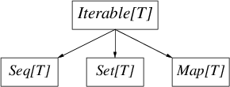

forループと内包, requireとassertflatMapScalaは、Twitterで使われている主なアプリケーションプログラミング言語の一つだ。TwitterのインフラのほとんどはScalaで書かれているし、我々の業務を支える大規模ライブラリをいくつか持っている。Scalaは極めて効率的だが、一方で大きな言語でもある。我々の経験上、Scalaの適用には細心の注意が必要だ。Scalaの落とし穴は何か？ どの機能を採用し、どれを避けるべきか？ いつ“純粋関数型スタイル”を用い、いつ控えるべきか？ つまり、我々が見出した“Scalaの効果的(effective)な使い方”とは何か？ このガイドは、我々の経験を抽出し、一連のベストプラクティスを提供する小論文にまとめようとするものだ。Twitterは、Scalaを、主に分散システムを構成する大容量サービスの作成に利用している。だから、我々の助言にはバイアスがかかっている。しかし、ここにあるアドバイスのほとんどは、他の問題領域へも自然に置き換えることができるはずだ。これは法律じゃない、だから逸脱は正当化されるべきだ。
Scalaは、簡潔な表現を可能にする数多くのツールを提供している。タイピングが少なければ、読む量も少なくなり、読む量が少なくなれば、大抵はより早く読める。故に、簡潔さは明瞭さを高める。しかし、簡潔さはまた、正反対の効果をもたらす使い勝手の悪い道具ともなりえる。正確さの次に、いつも読み手のことを考えよう。
何よりも、Scalaでプログラムするのだ。君が書いているのはJavaではないし、Haskellでも、Pythonでもない。Scalaのプログラムは、それらのうちのいずれの言語で書かれたものとも違っている。Scalaを効果的に使うには、君の問題をScalaの用語で表現しなければならない。Javaのプログラムを、無理矢理にScalaになおしても仕方がない。ほとんどのやり方で、それはオリジナルより劣ったものになるだろう。
これは、Scalaの入門じゃない。読者は、Scalaに慣れ親しんでいることを前提としている。これからScalaを学びたい人は、以下のサイトを参照するといいだろう:
このガイドは生きたドキュメントであり、現在の「ベストプラクティス」が反映されていく。けれども、核となるアイデアは変わらない。常に可読性を優先せよ。ジェネリックなコードを書き、しかし明瞭さを犠牲にするな。シンプルな言語機能を利用せよ。それは偉大な力を与え、難解さを防ぐ（型システムでは特に）。とりわけ、トレードオフを常に意識すべきだ。洗練された言語は複雑な実装を必要とし、判断や、動作や、機能間の相互作用や、そして君の協力者に対する理解を困難にする。つまり、複雑さは洗練の税金なのだ。効用がコストを上回っていることを、常に確認しなければいけない。
では、楽しんでほしい。
コードの書式の詳細は（それが実際的である限りは）重要じゃない。当然だが、スタイルに本質的な良し悪しはないし、たいてい人それぞれの個人的嗜好は異なる。しかし、同じ整形ルールを一貫して適用することは、ほぼ全ての場合で可読性を高める。特定のスタイルに馴染んだ読み手は、さらに他のローカルな慣習を理解したり、言語の文法の隅を解読したりする必要がない。
これは文法の重複度が高いScalaにおいては特に重要だ。メソッド呼び出しを例に挙げよう。メソッドは、“.”を付けても、ホワイトスペースを付けても呼び出せる。同様に、ゼロまたは一つの引数を取るメソッドでは丸カッコを付けても良いし、付けなくても良い、といった風に。さらに、様々なスタイルのメソッド呼び出しは、様々な文法上の曖昧さを露呈する！ 注意深く選ばれた整形ルールを一貫して適用することで、人間と機械の両方にとって、多くの曖昧さを解決できるのは間違いない。
我々は、Scala style guideを遵守すると同時に、以下に示すルールを追加した。
インデントはホワイトスペース2個。100カラムを超える行は避けよう。メソッドやクラス、オブジェクトの定義の間は一行空ける。
iやjやkを使おう。Future.allではなく、Future.collectのように。
okやerrやdefnが何を指すか知っている。一方で、sfriはそれほど一般的ではない。valを使おう。` を使ってオーバーロードするのは避ける`type`の代わりに、typとする。user.setActive()ではなく、user.activate()とする。src.definedではなく、src.isDefinedとする。getを付けないsite.getCountではなく、site.countとする。object User {
def getUser(id: Int): Option[User]
}object User {
def get(id: Int): Option[User]
}User.getと比べてUser.getUserは冗長だし、何も情報を与えない。
import com.twitter.concurrent.{Broker, Offer}import com.twitter.concurrent._
scala.collection.immutable あるいは scala.collection.mutable をインポートして名前を修飾するimmutable.Map")import com.twitter
import concurrentimport com.twitter.concurrent中カッコは、複合式を作るのに使われる（“モジュール言語”では他の用途にも使われる）。複合式の値は、リスト中の最後の式となる。単純な式に中カッコを使うのは避けよう。例えば、
def square(x: Int) = x*x
と書く代わりに、メソッドの本文を構文的に見分けやすい
def square(x: Int) = {
x * x
}
と書きたくなるかもしれない。しかし、最初の記法の方がゴチャゴチャしておらず読みやすい。明確化が目的でないなら仰々しい構文を使うのは避けよう。
関数の定義でパターンマッチを直接使える場合は、いつでもそうしよう。
list map { item =>
item match {
case Some(x) => x
case None => default
}
}
という間接的な書き方は意図が明瞭でない。代わりにmatchを折り畳んで
list map {
case Some(x) => x
case None => default
}
と書くと、リストの要素を写像(map over)しているのが分かりやすい。
ScalaDocを使ってAPIドキュメントを提供しよう。以下のスタイルで書こう:
/**
* ServiceBuilder builds services
* ...
*/
でも、標準のScalaDocスタイルは使わない方がいい:
/** ServiceBuilder builds services
* ...
*/
アスキーアートや視覚的な装飾に頼ってはいけない。また、APIではない不必要なコメントをドキュメント化してはいけない。もし、自分のコードの挙動を説明するためにコメントを追加しているのに気づいたら、まずは、それが何をするコードなのか明白になるよう書き直せないか考え直してみよう。「見るからに、それは動作する (it works, obviously)」よりも「明らかにそれは動作する(obviously it works)」方がいい（ホーアには申し訳ないけど）。
（訳注: アントニー・ホーアは、自身のチューリング賞受賞講演で『極めて複雑に設計して「明らかな」欠陥を無くすより、非常に簡素に設計して「明らかに」欠陥が無いようにする方が遥かに難しい』という趣旨の発言をしている。一方、著者は「コードから実装の意図を一目瞭然に読み取れるようにせよ」という立場であり、つまりホーアとは真逆の主張をしていると言える。）
型システム(type system)の主な目的は、プログラミングの誤りを検出することだ。型システムは、制限された形態の静的検査を効果的に提供する。これにより、コードにおいてある種の不変条件(invariant)を記述でき、それをコンパイラで検証できる。型システムがもたらす恩恵はもちろん他にもあるが、エラーチェックこそ、その存在理由（レーゾンデートル）だ。
我々が型システムを使う場合はこの目的を踏まえるべきだが、一方で、読み手にも気を配り続ける必要がある。型を慎重に使ったコードは明瞭さが高まるが、過剰に巧妙に使ったコードは読みにくいだけだ。
Scalaの強力な型システムは、学術的な探求と演習においてよく題材とされる(eg. Type level programming in Scala)。これらのテクニックは学術的に興味深いトピックだが、プロダクションコードでの応用において有用であることは稀だ。避けるべきだろう。
Scalaでは戻り型アノテーション(return type annotation)を省略できるが、一方で、アノテーションは優れたドキュメンテーションを提供する。戻り型アノテーションは、publicメソッドでは特に重要だ。露出していないメソッドで、かつ戻り型が明白な場合は省略しよう。
これは、ミックスインを使ったオブジェクトをインスタンス化する際に、Scalaコンパイラがシングルトン型を生成する場合は特に重要だ。例えば、make 関数が:
trait Service
def make() = new Service {
def getId = 123
}
Service という戻り型を持たない場合、コンパイラは細別型(refinement type)である Object with Service{def getId: Int} を生成する。代わりに、明示的なアノテーションを使うと:
def make(): Service = new Service{}
make の公開する型を変更することなく、traitをさらに好きなだけミックスできる。つまり、後方互換性の管理が容易になる。
変位(variance)は、ジェネリクスが派生型(subtyping)と結びつく時に現れる。変位は、コンテナ型(container type)の派生型と、要素型(contained type)の派生型がどう関連するかを定義する。Scalaでは変位アノテーションを宣言できるから、コレクションに代表される共通ライブラリの作者は、多数のアノテーションを扱う必要がある。変位アノテーションは、共用コードの使い勝手を高める上で重要だが、誤用すると危険なものとなりうる。
非変(invariant)は、Scalaの型システムにおいて高度だが必須の特徴だ。派生型の適用を助けるために、大いに（そして正しく）使うべきだ。
不変コレクションは共変(covariant)であるべきだ。要素型を受け取るメソッドは、コレクションを適切に“格下げ”すべきだ:
trait Collection[+T] {
def add[U >: T](other: U): Collection[U]
}
可変コレクションは非変であるべきだ。一般的に、可変コレクションにおいて共変は無効だ。この
trait HashSet[+T] {
def add[U >: T](item: U)
}
と、以下の型階層を見てほしい:
trait Mammal
trait Dog extends Mammal
trait Cat extends Mammal
もし今、犬(Dog)のハッシュセットがあるなら、
val dogs: HashSet[Dog]
それを哺乳類(Mammal)の集合として扱ったり、猫(Cat)を追加したりできる。
val mammals: HashSet[Mammal] = dogs
mammals.add(new Cat{})
これはもはや、犬のHashSetではない！
型エイリアス(type alias)は、簡便な名前を提供したり、意味を明瞭にするために使う。しかし、一目瞭然な型はエイリアスしない。
() => Int
は、簡潔かつ一般的な型を使っているので、
type IntMaker = () => Int
IntMaker
よりも明瞭だ。しかし、
class ConcurrentPool[K, V] {
type Queue = ConcurrentLinkedQueue[V]
type Map = ConcurrentHashMap[K, Queue]
...
}
は、意思疎通が目的で、簡潔さを高めたい場合に有用だ。
エイリアスが使える場合はサブクラス化を使ってはいけない。
trait SocketFactory extends (SocketAddress => Socket)
SocketFactoryは、Socketを生成する関数だ。型エイリアス
type SocketFactory = SocketAddress => Socket
を使う方がいい。これで、SocketFactory型の値となる関数リテラルを定義できるので、関数合成が使える:
val addrToInet: SocketAddress => Long
val inetToSocket: Long => Socket
val factory: SocketFactory = addrToInet andThen inetToSocket
パッケージオブジェクトを使うと、型エイリアスをトップレベル名に結びつけることができる:
package com.twitter
package object net {
type SocketFactory = (SocketAddress) => Socket
}
なお、型エイリアスは、その型のエイリアス名を構文的に置換することと同等で、新しい型ではないことに留意しよう。
暗黙(implicit)は、型システムの強力な機能だが、慎重に使うべきだ。それらの解決ルールは複雑で、シンプルな字句検査においてさえ、実際に何が起きているか把握するのを困難にする。暗黙を間違いなく使ってもいいのは、以下の場面だ:
Manifestのため暗黙を使う場合は、暗黙を使わずに同じことを達成する方法がないか、常に確認しよう。
似通ったデータ型同士を、自動的に変換するのに暗黙を使うのはやめよう（例えば、リストをストリームに変換する等）。それらの型はそれぞれ異なった動作をするので、読み手は暗黙の型変換が働いていないか注意しなくてはならなくなる。明示的に変換するべきだ。
Scalaが持つコレクションライブラリは、とても総称的(generic)で、機能豊富で、強力で、組み立てやすい。コレクションは高水準であり、多数の操作を提供している。多数のコレクション操作と変換を簡潔かつ読みやすく表現できるが、それらの機能を不注意に適用すると、しばしば正反対の結果を招く。全てのScalaプログラマは、collections design documentを読むべきだ。このドキュメントは、Scalaのコレクションライブラリに対する優れた洞察と意欲をもたらしてくれる。
常に、君のニーズを最もシンプルに満たすコレクションを使おう。
Scalaのコレクションライブラリは巨大だ。Traversable[T]を基底とする精密な階層に加えて、ほとんどのコレクションにimmutableとmutableのバリエーションがある。どんなに複雑でも、以下の図は、immutableとmutableの双方の階層にとって重要な区別を含んでいる。

Iterable[T]はイテレート(iterate)できるコレクションで、iterator(とforeach)メソッドを提供する。Seq[T]は順序付けされたコレクション。Set[T]は数学的集合（要素が一意な順序の無いコレクション）。そして、Map[T]は順序の無い連想配列だ。
不変(immutable)コレクションを使おう。不変コレクションは、ほとんどの状況に適用できる。また、プログラムが参照透過であり、故にデフォルトでスレッドセーフであると判断しやすくなる。
mutable名前空間は明示的に使う。scala.collections.mutable._をインポートしてSetを参照する代わりに、
import scala.collections.mutable
val set = mutable.Set()
とすることで、可変な`Set`を使っていることが分かりやすくなる。
コレクション型のデフォルトコンストラクタを使おう。例えば、順序付きの（かつ連結リストの動作が必要ない）シーケンスが欲しい場合は、いつでもSeq()コンストラクタを使おう:
val seq = Seq(1, 2, 3)
val set = Set(1, 2, 3)
val map = Map(1 -> "one", 2 -> "two", 3 -> "three")
このスタイルでは、コレクションの動作がその実装と切り離されているので、コレクションライブラリは最も適切な実装型を使うことができる。君が必要としているのはMapであって、必ずしも赤黒木じゃない。さらに、これらのデフォルトコンストラクタは、しばしば特殊化された表現を用いる。例えばMap()は、3つのキーを持つマップに対して、3つのフィールドを持つオブジェクト（Map3クラス）を使う。
以上からの結論として、メソッドやコンストラクタでは、最も総称的なコレクション型を適切に受け取ろう。要するに、通常は上記のIterable、Seq、SetあるいはMapのうち、どれか一つだ。もしメソッドがシーケンスを必要とする場合は、List[T]ではなくSeq[T]を使おう。
関数型プログラミングでは、不変コレクションを望みの結果へと変形する方法として、パイプライン化された変換が推奨されている。大抵は、この手法により問題をとても簡潔に解決できるが、同時に読み手を困惑させることもある。変換をパイプライン化すると、しばしば作者の意図を理解するのが困難になり、暗黙的にしか示されていない途中結果を、全て追跡し続けるしかなくなるからだ。例えば、様々なプログラミング言語に対する投票結果である (language, num votes) のシーケンスを集計して、票数の最も多い言語から順番に表示するコードは、以下のように書ける:
val votes = Seq(("scala", 1), ("java", 4), ("scala", 10), ("scala", 1), ("python", 10))
val orderedVotes = votes
.groupBy(_._1)
.map { case (which, counts) =>
(which, counts.foldLeft(0)(_ + _._2))
}.toSeq
.sortBy(_._2)
.reverse
このコードは、簡潔でかつ正しい。しかし、ほとんどの読み手は、作者の元の意図を把握するのに苦労するだろう。途中結果とパラメータに名前を付けるのは、多くの場合で、作者の意図をハッキリさせるのに役立つ戦略の一つだ:
val votesByLang = votes groupBy { case (lang, _) => lang }
val sumByLang = votesByLang map { case (lang, counts) =>
val countsOnly = counts map { case (_, count) => count }
(lang, countsOnly.sum)
}
val orderedVotes = sumByLang.toSeq
.sortBy { case (_, count) => count }
.reverse
このコードでは、施される変換を中間値の名前に、操作されるデータ構造をパラメータ名にしている。これにより、以前と同じくらい簡潔であるだけでなく、作者の意図がよりいっそう明瞭に表現されている。もし、このスタイルを使うことで名前空間の汚染が心配なら、式を{}でグループ化すると良い:
val orderedVotes = {
val votesByLang = ...
...
}
高水準コレクションライブラリは、（高水準な構築物が一般的にそうであるように）性能の推測が難しい。コンピュータに直接指示するやり方、つまり命令型スタイルから遠ざかるほど、あるコード片が性能に与える影響を厳密に予測するのは困難になる。一方で、正確さを判断することは概して容易だし、読みやすさも向上する。Scalaの場合、Javaランタイムが事態をさらに複雑にしている。Scalaでは、ボクシング操作やアンボクシング操作がユーザから隠されており、性能やメモリ使用量の面で重大なペナルティを被ることがある。
低レベルの詳細に焦点を当てる前に、君のコレクションの使い方が適切かどうか確認しよう。また、データ構造に予期しない漸近的な複雑さがないか確かめよう。Scalaのさまざまなコレクションの複雑さについては、こちらで述べられている。
性能最適化の第一法則は、君のアプリケーションがなぜ遅いのかを理解することだ。最適化を始める前に、君のアプリケーションをプロファイル[1]してデータを取ろう。最初に注目するのは、回数の多いループや巨大なデータ構造だ。最適化への過度な取り組みは、たいてい無駄な努力に終わる。クヌースの「時期尚早な最適化は諸悪の根源(“Premature optimisation is the root of all evil.”)」という格言を思い出そう。
性能やメモリ使用効率の良さが要求される場面では、多くの場合、低レベルコレクションを使うのが妥当だ。巨大なシーケンスには、リストより配列を使おう（不変のVectorコレクションは、配列への参照透過なインタフェースを提供する）。また、性能が重要な場合は、シーケンスを直接生成せずにバッファを使おう。
Javaコレクションとの相互運用のために、scala.collection.JavaConvertersを使おう。JavaConvertersは、暗黙変換を行うasJavaメソッドとasScalaメソッドを追加する。読み手を助けるために、これらの変換は明示的に行うようにしよう:
import scala.collection.JavaConverters._
val list: java.util.List[Int] = Seq(1,2,3,4).asJava
val buffer: scala.collection.mutable.Buffer[Int] = list.asScala
現代のサービスは、サーバへの何万何十万もの同時操作を調整するため、高い並行性(concurrency)を備えている。そして、隠れた複雑性への対処は、堅固なシステムソフトウェアを記述する上で中心的なテーマだ。
スレッド(thread)は、並行性を表現する一つの手段だ。スレッドからは、OSによってスケジュールされる、独立したヒープ共有の実行コンテクストを利用できる。しかし、Javaにおいてスレッド生成はコストが高い。そのため、主にスレッドプールを使って、リソースとして管理する必要がある。これは、プログラマにとってさらなる複雑さを生み出す。また、アプリケーションロジックとそれが使用する潜在的なリソースを分離するのが難しくなり、結合度を高めてしまう。
この複雑さは、出力(fan-out)の大きいサービスを作成する際に、とりわけ明らかになる。それぞれの受信リクエストからは、システムのさらに別の階層に対する多数のリクエストが生じる。それらのシステムにおいて、スレッドプールは、各階層でのリクエストの割合によってバランスされるよう管理される必要がある。あるスレッドプールで管理に失敗すると、その影響は他のスレッドプールにも広がってしまう。
また、堅固なシステムは、タイムアウトとキャンセルについても検討する必要がある。どちらに対処するにも、さらなる「制御スレッド」の導入が必要で、そのことが問題をさらに複雑にする。ちなみに、もしスレッドのコストが安いなら、こうした問題は少なくなる。なぜなら、スレッドプールが必要とされず、タイムアウトしたスレッドを放棄することができ、追加のリソース管理も必要ないからだ。
このように、リソース管理はモジュール性を危うくするのだ。
Futureを使って並行性を管理しよう。Futureは、並行操作とリソース管理を疎結合にする。例えば、Finagleは、並行操作をわずかなスレッド数で効率的に多重化する。Scalaには、軽量なクロージャリテラルの構文がある。だから、Futureは構文上の負担が小さく、ほとんどのプログラマが身に付けることができる。
Futureは、プログラマが並行計算を宣言的なスタイルで表現できるようにする。Futureは合成可能で、また計算の失敗を原則に基づいて処理できる。こうした性質から、Futureは関数型プログラミング言語にとても適しており、推奨されるスタイルだと確信している。
生成したFutureを変換しよう。Futureの変換を使うと、失敗の伝播やキャンセルの通知が行われることを保証できる。また、プログラマは、Javaメモリモデルの影響を検討する必要がなくなる。RPCを順番に10回発行して結果を表示するとき、注意深いプログラマでさえ、以下のように書いてしまうかもしれない:
val p = new Promise[List[Result]]
var results: List[Result] = Nil
def collect() {
doRpc() onSuccess { result =>
results = result :: results
if (results.length < 10)
collect()
else
p.setValue(results)
} onFailure { t =>
p.setException(t)
}
}
collect()
p onSuccess { results =>
printf("Got results %s\n", results.mkString(", "))
}
RPCの失敗が確実に伝播するように、プログラマは、コードに制御フローをいくつも挿入する必要がある。さらに悪いことに、上記のコードは間違っている！ resultsをvolatileとして宣言していないので、各繰り返しにおいて、resultsが一つ前の値を保持していることを保証できない。Javaのメモリモデルは、油断ならない獣だ。しかし幸いにして、宣言的スタイルを使えば、これらの落とし穴を全て避けることができる:
def collect(results: List[Result] = Nil): Future[List[Result]] =
doRpc() flatMap { result =>
if (results.length < 9)
collect(result :: results)
else
result :: results
}
collect() onSuccess { results =>
printf("Got results %s\n", results.mkString(", "))
}
シーケンスの操作にflatMapを使うと、処理が進むにつれて、リストの先頭に結果を追加できる。これは、関数型プログラミングの一般的なイディオムを、Futureに置き換えたものだ。これは正しく動作するだけでなく、必要な「おまじない」を少なくでき、間違いの元を減らすことができる。そして、読みやすい。
Futureの結合子(combinator)を使おう。Future.selectやFuture.join、そしてFuture.collectは、複数のFutureを結合して操作する際の一般的なパターンを体系化している。
並行コレクションの話題は、私見と、機微と、教義と、FUDに満ちている。それらは、多くの場合、実践において取るに足らない問題だ。いつでも、目的を果たす上で、最も単純で、最も退屈で、最も標準的なコレクションから始めよう。同期化コレクションでうまくいかないのが分かる前に、並行コレクションに手を伸ばしてはいけない。JVMは、同期を低コストで実現する洗練された機構を持っている。その有効性に、君は驚くはずだ。
不変(immutable)コレクションで目的を果たせるなら、それを使おう。不変コレクションは参照透過なので、並行コンテキストでの推論が簡単になる。不変コレクションの変更は、主に（varセルやAtomicReferenceが指す）現在の値への参照を更新することで行う。不変コレクションの変更には、注意が必要だ。他のスレッドへ不変コレクションを公開する場合、AtomicReferenceには再試行が必要だし、var変数はvolatileとして宣言しなければいけない。
可変(mutable)な並行コレクションは複雑な動作をするだけでなく、Javaメモリモデルの微妙な部分を利用する。だから、可変並行コレクションが更新を公開する方法など、暗黙的な挙動について理解しておこう。また、コレクションの合成には同期化コレクションを使おう。並行コレクションでは、getOrElseUpdateのような操作を正しく実装できないし、特に、合成コレクションの作成はエラーの温床だ。
関数型スタイルのプログラムは伝統的な制御構造が少なく済み、また、宣言型スタイルで書かれていると読みやすいことが多い。これは典型的には、ロジックをいくつかの小さなメソッドや関数に分解し、それらを互いにmatch式で貼り合わせることを意味する。また、関数型プログラムは、より式指向となる傾向がある。つまり、条件式のそれぞれの分岐は同じ型の値を計算し、for (..) yieldで内包(comprehension)を計算する。また、再帰の利用が一般的だ。
再帰表現を使うと、問題をしばしば簡潔に記述できる。そしてコンパイラは、末尾呼び出しの最適化が適用できるコードを正規のループに置き換える（末尾最適化が適用されるかは@tailrecアノテーションで確認できる）。
ヒープのfix-downを、極めて標準的な命令型で実装したバージョンを検討しよう:
def fixDown(heap: Array[T], m: Int, n: Int): Unit = {
var k: Int = m
while (n >= 2*k) {
var j = 2*k
if (j < n && heap(j) < heap(j + 1))
j += 1
if (heap(k) >= heap(j))
return
else {
swap(heap, k, j)
k = j
}
}
}
このコードでは、whileループに入るたび、一つ前の反復で変更された状態を参照する。各変数の値は、どの分岐を取るかに依存する。また、正しい位置が見つかると、関数はループの中盤でreturnする（鋭い読者は、ダイクストラの“Go To Statement Considered Harmful”に同様の議論があることに気づくと思う）。
（末尾）再帰による実装を検討してみよう[2]:
@tailrec
final def fixDown(heap: Array[T], i: Int, j: Int) {
if (j < i*2) return
val m = if (j == i*2 || heap(2*i) < heap(2*i+1)) 2*i else 2*i + 1
if (heap(m) < heap(i)) {
swap(heap, i, m)
fixDown(heap, m, j)
}
}
ここでは、すべての反復ははっきりと白紙の状態で開始される。また、参照セルが存在しないため、不変式(invariant)を数多く見出せる。このコードはより推論しやすいだけでなく、より読みやすい。それだけでなく、性能面のペナルティもない。コンパイラは、メソッドが末尾再帰なら、これを標準的な命令型のループへと変換するからだ。
（訳注: エドガー・ダイクストラは、構造化プログラミングの提唱者。彼が執筆したエッセイ“Go To Statement Considered Harmful”は、「GOTO有害論」の端緒として有名。）
前節では再帰を使うメリットを紹介したけど、だからといって命令型の構造は無価値だというわけじゃない。多くの場合、計算を早期に終了する方が、終点の可能性がある全ての位置に条件分岐を持つよりも適切だ。実際に、上記のfixDownは、ヒープの終端に達するとreturnによって早期に終了する。
returnを使うと、分岐を減らして不変式(invariant)を定めることができる。これにより、入れ子が減ってコードを追いやすくなるだけでなく、後続のコードの正当性を論証しやすくなる（配列の範囲外をアクセスしないことを確認する場合とか）。これは、“ガード”節で特に有用だ:
def compare(a: AnyRef, b: AnyRef): Int = {
if (a eq b)
return 0
val d = System.identityHashCode(a) compare System.identityHashCode(b)
if (d != 0)
return d
// slow path..
}
returnを使って、コードを明快にして読みやすさを高めよう。ただし、命令型言語でのような使い方をしてはいけない。つまり、下記のように計算結果を返すためにreturnを使うのは避けよう。
def suffix(i: Int) = {
if (i == 1) return "st"
else if (i == 2) return "nd"
else if (i == 3) return "rd"
else return "th"
}
代わりに下記のように書こう:
def suffix(i: Int) =
if (i == 1) "st"
else if (i == 2) "nd"
else if (i == 3) "rd"
else "th"
しかし、より優れているのはmatch式を使うことだ:
def suffix(i: Int) = i match {
case 1 => "st"
case 2 => "nd"
case 3 => "rd"
case _ => "th"
}
なお、クロージャの内部でreturnを使うと、目に見えないコストが発生する場合があるので注意しよう。
seq foreach { elem =>
if (elem.isLast)
return
// process...
}
このコードは、バイトコードでは例外の`throw`と`catch`として実装されるので、実行頻度の高いコードで使うと性能に影響を与える。
forループと内包forを使うと、ループと集約を簡潔かつ自然に表現できる。forは、多数のシーケンスを平坦化(flatten)する場合に特に有用だ。forの構文は、内部的にはクロージャを割り当ててディスパッチしていることを覆い隠している。このため、予期しないコストが発生したり、予想外の挙動を示したりする。例えば、
for (item <- container) {
if (item != 2) return
}
このコードは、`container`が計算を遅延させた場合にランタイムエラーが発生し、その結果としてreturnが非局所的(nonlocal)に評価されてしまうことがある！
これらの理由から、コードを明瞭にするためである場合を除いて、forを使う代わりに、foreachやflatMapやmapやfilterを直接呼び出す方が良いことが多い。
（訳注1: Scalaのfor式はforeach、flatMap、map、withFilterを呼び出す糖衣構文で、ループ内の式は、コンパイル時にそれらのメソッドに渡される匿名関数に変換される。例えば、上記の例のfor式は、実際には
container foreach { item =>
if (item != 2) return
}
というコードとして実行される。原文では、最初からこのように記述することを推奨している。）
（訳注2: ネストした匿名関数でのreturn式は、ランタイムエラーであるNonLocalReturnExceptionのthrowとcatchに変換される。この場合、containerが遅延評価されるとreturn式の挙動が意図しないものになる場合がある。詳細に興味がある場合は、こちらの議論も参照してほしい。）
requireとassertrequireとassertは、どちらも実行可能なドキュメントとして機能する。これらは、要求される不変条件(invariant)を型システムが表現できない状況で有用だ。assertは、コードが仮定する（内部あるいは外部の）不変条件を表現するために使われる。例えば、
val stream = getClass.getResourceAsStream("someclassdata")
assert(stream != null)
一方で、requireはAPIの契約を表現するために使われる:
def fib(n: Int) = {
require(n > 0)
...
}
関数型プログラミングと一緒に用いる時に 値指向型 プログラミングは多くの恩恵を受ける。このスタイルはステートフルな変更よりも値の変換を強調する。得られるコードは参照透過(referentially transparent)であり、より強力な不変式(invariant)を提供し、さらに容易に推論することが可能になる。ケースクラス、パターンマッチ、構造化代入(destructuring-bind)、型推論、クロージャやメソッドの軽量な生成構文がこのツールになる。
ケースクラス(case class)は代数的データ型(ADT)をエンコードする。パターンマッチと共に利用することで、ケースクラスは巨大なデータ構造をモデリングするのに役に立ち、強力な不変式を簡潔なコードとして提供する。パターンマッチの解析器は、さらに強力な静的保証を提供する包括的解析(exhaustivity analysis)を実装している。 ケースクラスと共に代数的データ型をエンコードする時、以下のパターンを使おう：
sealed trait Tree[T]
case class Node[T](left: Tree[T], right: Tree[T]) extends Tree[T]
case class Leaf[T](value: T) extends Tree[T]
Tree[T]の型はNodeとLeafの2つのコンストラクタを持つ。sealedとして型を宣言する事で、ソースファイルの外からコンストラクタを追加することを制限できるため、コンパイラに包括的解析を行わせることができる。
パターンマッチと一緒に利用することで、そのようなモデリングを簡潔かつ“明らかに正しい”コードにすることができる。
def findMin[T <: Ordered[T]](tree: Tree[T]) = tree match {
case Node(left, right) => Seq(findMin(left), findMin(right)).min
case Leaf(value) => value
}
ツリーのような再帰構造は代数的データ型の古典的なアプリケーションを構成する一方で、それらの有用な領域はかなり大きい。 代数的データ型でモデリングされた結合の分解は状態遷移(state machines)で頻繁に発生する。
Option型は、空であること(None)、または満たされていること(Some(value))を表すコンテナである。nullに対する安全な代替手段を提供し、可能な限り如何なる時も利用されるべきである。Option型は、たかだかひとつの要素を持つコレクションであり、コレクションの操作で装飾される。利用しよう！
Option型は、無(None)か、有(Some(Value))のどちらかを格納するコンテナである。nullの代わりに安全に使用でき、いつでも可能な限り使用されるべきである。
Option型は(たかだかひとつの一つの要素しかない)コレクションであり、集合の操作で利用できる。使うしかない!
以下のように書こう。
var username: Option[String] = None
...
username = Some("foobar")
以下のようには書かない。
var username: String = null
...
username = "foobar"
前者の方が安全な理由：Option型はusernameが空であることをチェックされなければならないことを静的に強要しているため。
Optionの値の条件節の実行はforeachを使うべきである。以下の代わりに、
if (opt.isDefined)
operate(opt.get)
以下のように書く
opt foreach { value =>
operate(value)}
奇妙なスタイルに思えるかもしれないが、よりよい安全性を提供(例外を引き起こしうるgetを呼んでいない)し、簡潔である。両方の選択肢が利用されうるなら、パターンマッチを使おう。
opt match {
case Some(value) => operate(value)
case None => defaultAction()
}
しかし、もし値がない場合はデフォルト値で良いのであれば、getOrElseを使おう。
operate(opt getOrElse defaultValue)
Optionを多用しすぎてはいけない。もし、何か目的にあったデフォルト値、Null Object、があるなら、代わりにそれを使おう。
Optionは、また、nullになり得る値を覆う扱いやすいコンストラクターと共に使おう。
Option(getClass.getResourceAsStream("foo"))
は、Option[InputStream] であり、getResourceAsStream が null を返す場合に、None という値を返す。
パターンマッチ (x match { ...) は、Scalaで書かれたコード内に広く使われている。パターンマッチは条件の実行および分解(destructuring)、ひとつの構成物へのキャストを合成する。うまく使うことで明快さと安全さの両方をより高めてくれる。
型ごとの処理を実装するためにパターンマッチを使う。
obj match {
case str: String => ...
case addr: SocketAddress => ...
パターンマッチは、分解とあわせて利用された時(たとえば、ケースクラスをマッチングするとき)に最大限に役立つ 次の例のように書くべきではなく、
animal match {
case dog: Dog => "dog (%s)".format(dog.breed)
case _ => animal.species
}
以下のように書く
animal match {
case Dog(breed) => "dog (%s)".format(breed)
case other => other.species
}
ただ、2つのコンストラクタ(apply) を利用する場合のみ、カスタム抽出子 を書く。
さもなければ不自然になる可能性がある。
デフォルト値がもっと意味を持つものであるとき、条件実行にパターンマッチを使わないようにする。
コレクションライブラリは通常Optionを返すメソッドを提供する。次の例は避けよ。
val x = list match {
case head :: _ => head
case Nil => default
}
なぜなら
val x = list.headOption getOrElse default
の方がより短く、目的が伝わりやすいからだ。
Scala は 部分関数(PartialFunction) を定義するための構文上の簡略的記法を提供する。
val pf: PartialFunction[Int, String] = {
case i if i%2 == 0 => "even"
}
また、これらは orElse と組み合わせられる。
val tf: (Int => String) = pf orElse { case _ => "odd"}
tf(1) == "odd"
tf(2) == "even"
部分関数は多くの場面で起こり得るものであり，PartialFunction で効率的に符号化される。
メソッドの引数として利用する例：
trait Publisher[T] {
def subscribe(f: PartialFunction[T, Unit])
}
val publisher: Publisher[Int] = ..
publisher.subscribe {
case i if isPrime(i) => println("found prime", i)
case i if i%2 == 0 => count += 2
/* ignore the rest */
}
また状況によっては Option を返すような呼び出しがあるかもしれないが、
// Attempt to classify the the throwable for logging.
type Classifier = Throwable => Option[java.util.logging.Level]
これも、PartialFunctionを使って表現する方がよいだろう。
type Classifier = PartialFunction[Throwable, java.util.Logging.Level]
それはより優れた構成可能性(composability)につながるからだ。
val classifier1: Classifier
val classifier2: Classifier
val classifier = classifier1 orElse classifier2 orElse { _ => java.util.Logging.Level.FINEST }
Destructuring bindによる値代入は、パターンマッチに関連している。 それらは同じメカニズムを利用しているが、(例外の可能性を許容しないために)正確にひとつの選択肢があるときだけ適用できる。 Destructuring bindは特にタプルやケースクラスで有用である。
val tuple = ('a', 1)
val (char, digit) = tuple
val tweet = Tweet("just tweeting", Time.now)
val Tweet(text, timestamp) = tweet
（訳注: Destructuring bindは、「構造化代入」や「分配束縛」等の訳がある。詳細については、こちらの議論を参照してほしい。）
Scala のフィールドは、val が lazy プレフィックスと共に使われた時は 必要になったときに 計算されるようになる。
なぜなら、(フィールドを private[this] にしない限りは)フィールドとメソッドは Scala では等価だからである。
lazy val field = computation()
は、(概して) 簡略的記法で、
var _theField = None
def field = if (_theField.isDefined) _theField.get else {
_theField = Some(computation())
_theField.get
}
すなわち、結果を演算し記憶する。この目的のために遅延フィールドを使うようにし、しかし、遅延さが意味を持って(by semantics)要求されるときには遅延評価を使うことを避ける。
このような場合には、コストモデルを明確にし、副作用をより正確に制御するために明示的であることがよりよい。
遅延フィールドはスレッドセーフである。
メソッドの引数は名前によって特定されるかもしれない、その意味するところは パラメータは値に紐付くのではなくて、繰り返し実行されうる 演算 に対して紐付くということである。 この機能は気をつけて適用されなければならない。値渡しの文脈を期待している呼び出し側は驚くであろう。 この機能は構文的に自然な DSL を構築するためにある。— 新しい制御構造は特に、かなりネイティブな言語機能に見えるように作ることができる
名前呼び出しは、そのような制御構造のためだけに使うことだ。そこでは、渡されてくるものは、 思いも寄らない演算結果より“ブロック”であるということが、呼び出し側に明らかである。 名前呼び出しは、最後の引数リストの最後の位置にある引数にだけ使うことだ。 名前呼び出しを使うときは、呼び出し側にその引数が名前呼び出しであることが明確に伝わるようにメソッドには名称をつけることを確実におこなう。
値を複数回演算させたいとき、また特にその演算が副作用を持つとき、陽関数(explicit functions)を使う。
class SSLConnector(mkEngine: () => SSLEngine)
目的は明らかに残しつつ、呼び出し元が驚くことがなくなる。
flatMapmap と flatten の合成である flatMap は、鋭敏な力と素晴らしい実用性を持ち、特別な注目を浴びるに値する。
その同類である map のように、Future や Option といった非伝統的なコレクションにおいて、頻繁に利用できる。
その振る舞いは、Container[A]といったシグネチャによって明らかになる。
flatMap[B](f: A => Container[B]): Container[B]
flatMap は、新しい コレクションを生成するコレクションの各要素に対して関数 f を呼び出し、それら(のすべて)は、
フラットな結果になる。例えば、次のコードは、同じ文字が繰り返されない2文字からなる文字列の順列をすべて取得する。
val chars = 'a' to 'z'
val perms = chars flatMap { a =>
chars flatMap { b =>
if (a != b) Seq("%c%c".format(a, b))
else Seq()
}
}
これは、より簡潔な for による包含に等価である。(それは、— 荒くまとめるなら — 上記のためのシンタックスシュガーである)
val perms = for {
a <- chars
b <- chars
if a != b
} yield "%c%c".format(a, b)
flatMap は、(Optionの連鎖(chain of options)を畳み込んでひとつにするときなど) Option を扱うときに頻繁に役に立つ。
val host: Option[String] = ..
val port: Option[Int] = ..
val addr: Option[InetSocketAddress] =
host flatMap { h =>
port map { p =>
new InetSocketAddress(h, p)
}
}
これも、for を使えばもっと簡潔に記述できる。
val addr: Option[InetSocketAddress] = for {
h <- host
p <- port
} yield new InetSocketAddress(h, p)
Future における flatMap の利用については、futures section で議論されている。
Scala の広大な広がりの大部分はオブジェクト機構にある。Scala は、 すべての値 がオブジェクトであるという意味で、 純粋な 言語である。プリミティブな型と混合型の間に違いはない。 Scala はミックスインの機能もあり、静的型チェックの利益をすべて享受しつつ、もっと直行して別々なモジュールをコンパイル時に柔軟に一緒に組立てられる。
ミックスイン機構の背景ある動機は、伝統的な依存性注入を不要にすることである。その“コンポーネントスタイル”プログラミングの極致は、 Cake パターン である。
（訳注: 上記のCakeパターンに関するエントリは、@eed3si9n氏が日本語訳を提供している。）
しかし、我々の場合、Scala それ自身が、“クラシックな”（コンストラクタによる）依存性注入(dependency injection)の多くの構文上のオーバーヘッドを排除してくれるため、むしろ、使うようにしている。それはより明快であり、依存性は(コンストラクタの)型でまだエンコードされ、クラスの組立は構文上、そよ風並に些細な作業に過ぎない。それは退屈でシンプルだが動作する。プログラムのモジュール化のために依存性注入を使うことだ。特に、継承より合成を選択することだ 。これにより、よりモジュール化が進みテスト可能なプログラムになる。継承が必要な状況に遭遇した際には自分自身に問うのだ：もし、言語が継承をサポートしていなかったら、どのように構造化するだろう、と。この答えは強いることができるかもしれない。
依存性注入は典型的にはトレイトを利用する。
trait TweetStream {
def subscribe(f: Tweet => Unit)
}
class HosebirdStream extends TweetStream ...
class FileStream extends TweetStream ..
class TweetCounter(stream: TweetStream) {
stream.subscribe { tweet => count += 1 }
}
ファクトリー (オブジェクトを生成するオブジェクト)を注入することは一般的である。以下のような場合には、特化したファクトリー型よりはシンプルな関数の利用を好むようにする。
class FilteredTweetCounter(mkStream: Filter => TweetStream) {
mkStream(PublicTweets).subscribe { tweet => publicCount += 1 }
mkStream(DMs).subscribe { tweet => dmCount += 1 }
}
依存性注入は、一般的な インターフェイス の利用や、トレイト(trait)での共通コードの実装を妨げるものでは全くない。むしろ全く反対であり、トレイトの利用は正確には次の理由で強く推奨されている：複数のインターフェイス(トレイト)は、具象クラスで実装されるかもしれないし、共通コードはすべてのそれらのクラス群に横断的に再利用されるかもしれない。
トレイトは短くて直交するように保つことだ。分割可能な機能をひとつのトレイトの塊にしてしまってはいけない。最も小さな関連するアイデアだけを一緒にすることを考えるようにする。たとえば、IOをする何かを想像してみるといい。
trait IOer {
def write(bytes: Array[Byte])
def read(n: Int): Array[Byte]
}
これを２つの振る舞いに分離する。
trait Reader {
def read(n: Int): Array[Byte]
}
trait Writer {
def write(bytes: Array[Byte])
}
そして、もともとIOer だったこれらを、 new Reader with Writer… のようにミックスする。インターフェイスの最小化は、よりよい直交性とよりよりモジュール化につながる。
Scala は非常に表現豊かな可視性を制御する修飾子を持つ。修飾子は、何を 公開API として構成するかを定義するのに重要である。公開APIは限定されるべきであり、それにより利用者は不注意に実装の詳細に依存することはなくなり、また、作者のAPIを変更する力を制限する。このことは、良いモジュール性にとって決定的に重要である。ルールとして、公開APIを拡張することは、彼らと契約するよりも全然簡単である。貧相なアノテーションは、君のコードの後方バイナリ互換性を汚すこともできるようにもなる。
private[this]private にしたクラスメンバーは、
private val x: Int = ...
そのクラスの(サブクラスは含まない)すべてのインスタンスから見える。殆どの場合、private[this]としたいだろう。
private[this] val: Int = ..
これで特定のインスタンスのみに可視性は制限された。Scala コンパイラーは、private[this] を(静的に定義されたクラスにアクセスが限られるから)シンプルなフィールドアクセッサに変換することもでき、それは時々、性能を最適化することに寄与する。
Scala では、シングルトンクラス型を生成することは一般的である。例えば、
def foo() = new Foo with Bar with Baz {
...
}
このような状況では、戻り型を宣言することで可視性は限定される。
def foo(): Foo with Bar = new Foo with Bar with Baz {
...
}
foo() の呼び出し側は、戻り値のインスタンスの限定されたビュー(Foo with Bar) を参照する。
構造的部分型(structural type)は通常は使わない。構造的部分型は、便利で強力な機能であるが、残念なことに JVM 上では効率的な実装手段はない。しかし、ある運命のいたずらともいうべき実装によって、リフレクションをするためのとても良い速記法を提供する。
val obj: AnyRef
obj.asInstanceOf[{def close()}].close()
（訳注: “structural typing”を直訳すると「構造的な型付け」だが、Scalaの文脈では「構造的部分型(structural subtyping)」と同じ意味だと考えて良い。この用語の背景については、@kmizu氏による解説を参照して欲しい。）
我々は、運用時にガベージコレクションのチューニングに多くの時間を費やす。 ガベージコレクションの考慮事項はかなりJavaのそれに似ているが、典型的な Scala コードの場合は 典型的な Java コードより多くの(生存時間の短い)ガベージを生成する。これは関数スタイルの副作用なのである。HotSpot の世代別ガベージコレクションは、ほとんどの環境では生存時間の短いガベージを効果的に解放するので、概してこれは問題にならない。
GCの性能問題に取り組む前に、Attila が発表した我々のGCチューニングに関する経験のいくつかに関するプレゼンテーションを見て欲しい。
Scala 固有で、GC問題を軽減する唯一のツールは、ガベージの生成をより少なくすることである。しかし、データなしで行動してはならない！もし、明らかに悪化させる何かをしているわけではないのであれば、我々の提供する heapster や gcprof を含む、Java の様々なプロファイルツールを使うことだ。
我々は、Javaで利用されるようなコードを Scala で書くとき、Javaでの使い方を慣用的に残して良いものか確かめるようにしている。大体は余計な努力は必要ない。クラス群と実装を含まないトレイトはJava に正確に等価に対応される。しかし、時々、別に Java API を提供する必要がある。あなたのライブラリのJava API の感じをつかむ良い方法は単体テストをJavaで書くことである(ただコンパイルが通れば良い)。この点については Scala コンパイラーは不安定であるのだが、このテストによって、あなたのライブラリの Java 視点は安定さを維持できる。
実装を含むトレイトは直接 Java から利用できない。代わりに抽象クラスをトレイトと共に拡張する必要がある。
// 直接 Java からは利用できない
trait Animal {
def eat(other: Animal)
def eatMany(animals: Seq[Animal) = animals foreach(eat(_))
}
// しかし、これなら利用できる
abstract class JavaAnimal extends Animal
Twitterにおいて、最も重要な標準ライブラリはUtilとFinagleだ。Utilは、ScalaやJavaの標準ライブラリの拡張という位置付けで、それらに欠けている機能やより適切な実装を提供する。Finagleは、TwitterのRPCシステムで、分散システムの構成要素の中核だ。
Futureについては、並行性の章でも少し議論した。Futureは、非同期処理の連係において重要な機構で、TwitterのコードベースやFinagleのコアで広く使われている。Futureは、並行イベントの合成(composition)を可能にすると共に、高度な並行操作についての判断を単純化する。また、Futureを使うと、並行操作をJVM上で極めて効率的に実装できる。
ネットワーク入出力やディスク入出力等の操作は、基本的にスレッドの実行を一時停止する可能性がある。TwitterのFutureは非同期的なので、ブロックする操作(blocking operation)は、操作結果に対するFutureを提供するシステム自身によって処理されなければいけない。Finagleは、ネットワーク入出力のためのそうしたシステムを提供する。
Futureは、単純明白だ。Futureは、まだ完了していない計算の結果に対する約束(promise)を保持する、単純なコンテナ（プレースホルダ）だ。当然、計算は失敗することがあるので、このこともコード化する必要がある。Futureは三つの状態、すなわち保留(pending)、失敗(failed)、完了(completed)のうち、きっかり一つの状態を取ることができる。
もう一度確認すると、合成とは、単純なコンポーネントを結合してより複雑なコンポーネントにすることだ。合成の標準的な例は、関数合成だ。関数fとgが与えられたとき、合成関数(g∘f)(x) = g(f(x))は、まずxをfに適用し、その結果をgに適用した結果だ。この合成関数をScalaで書くと:
val f = (i: Int) => i.toString
val g = (s: String) => s+s+s
val h = g compose f // : Int => String
scala> h(123)
res0: java.lang.String = 123123123この関数hは合成関数で、fとgの双方を所定の方法で結合した新しい関数だ。
Futureは、ゼロ個あるいは一個の要素を持つコンテナであり、コレクションの一種だ。Futureは、mapやfilterやforeachといった、標準コレクションのメソッドを持つ。Futureの値は遅延されるので、必然的にこれらのコレクションメソッドを適用した結果もまた遅延される。
val result: Future[Int]
val resultStr: Future[String] = result map { i => i.toString }
関数{ i => i.toString }は、Int値が利用可能になるまで呼び出されない。また、変換されたコレクションであるresultStrも、その時まで保留状態(pending state)になる。
リストは平坦化(flatten)できる;
val listOfList: List[List[Int]] = ..
val list: List[Int] = listOfList.flatten
また、平坦化はFutureにおいても意味をなす:
val futureOfFuture: Future[Future[Int]] = ..
val future: Future[Int] = futureOfFuture.flatten
Futureのflattenの実装は、直ちにFutureを返す。Futureは遅延するので、flattenが返すFutureは、外側のFuture(Future[Future[Int]])の完了と、その後に内側のFuture(Future[Future[Int]])の完了を待つ結果だ。また、外側のFutureが失敗したら、平坦化されたFutureも失敗する必要がある。
Futureは、Listと同様にflatMapを定義している。Future[A]は、そのシグネチャを以下のように定義する。
flatMap[B](f: A => Future[B]): Future[B]
`flatMap`は、mapとflattenの組み合わせのようなもので、以下のように実装できる:
def flatMap[B](f: A => Future[B]): Future[B] = {
val mapped: Future[Future[B]] = this map f
val flattened: Future[B] = mapped.flatten
flattened
}
これは、強力な組み合わせだ！ flatMapによって、二番目のFutureを最初のFutureの結果に基づいて計算する、順番に並べられた二つのFutureの結果である新しいFutureを定義できる。ユーザ(ID)を認証するために、二つのRPCを実行する必要がある場合を想像してほしい。この場合、合成された操作を以下の方法で定義できる:
def getUser(id: Int): Future[User]
def authenticate(user: User): Future[Boolean]
def isIdAuthed(id: Int): Future[Boolean] =
getUser(id) flatMap { user => authenticate(user) }
この種の結合のもう一つの恩恵は、エラー処理が組み込まれていることだ。getUser(..)かauthenticate(..)が追加でエラー処理をしない限り、isAuthed(..)が返すFutureは失敗するだろう。
FutureのコールバックメソッドであるrespondやonSuccess、onFailure、ensureは、その親に連鎖した(chained)新たなFutureを返す。このFutureは、その親が完了して初めて完了することが保証されている。このパターンを実現するには、例えば以下のようにする。
acquireResource()
future onSuccess { value =>
computeSomething(value)
} ensure {
freeResource()
}
このときfreeResource()は、computeSomethingの後にのみ実行されることが保証される。これにより、ネイティブなtry .. finallyパターンのエミュレートが可能になる。
foreachの代わりにonSuccessを使おう。onSuccessの方がonFailureと対称を成して目的をより良く表せるし、連鎖も可能になる。
なるべく、Promiseインスタンスを直接作らないようにしよう。ほぼ全てのタスクは、定義済みの結合子を使って実現できる。結合子は、エラーやキャンセルが伝播することを保証すると共に、一般的にデータフロー方式でのプログラミングを促進する。データフロー方式を使うと、大抵、同期化やvolatile宣言が不要になる。
末尾再帰方式で書かれたコードは、スタック空間のリークを引き起こさないので、データフロー方式を使ってループを効率的に実装できる:
case class Node(parent: Option[Node], ...)
def getNode(id: Int): Future[Node] = ...
def getHierarchy(id: Int, nodes: List[Node] = Nil): Future[Node] =
getNode(id) flatMap {
case n@Node(Some(parent), ..) => getHierarchy(parent, n :: nodes)
case n => Future.value((n :: nodes).reverse)
}
Futureは、数多くの有用なメソッドを定義している。Future.value()やFuture.exception()を使うと、事前に結果が満たされたFutureを作れる。Future.collect()やFuture.join()、Future.select()は、複数のFutureを一つにまとめる結合子を提供する（ie. scatter-gather操作のgather部分）。
Futureは、弱いキャンセルを実装している。Future#cancelの呼び出しは、計算を直ちに終了させるのではなく、レベルトリガ方式のシグナルを伝播する。最終的にFutureを満たすのがいずれの処理であっても、シグナルに問い合わせる(query)ことができる。キャンセルは、値から反対方向へ伝播する。つまり、消費者(consumer)がセットしたキャンセルのシグナルは、対応する生産者(producer)へと伝播する。生産者はPromiseにあるonCancellationを使って、シグナルに応じて作動するリスナーを指定する。
つまり、キャンセルの動作は生産者に依存し、デフォルトの実装は存在しない。キャンセルはヒントに過ぎない。
UtilライブラリのLocalは、ローカルから特定のFutureのディスパッチツリーへの参照セルを提供する。Localの値をセットすると、同じスレッド内のFutureによって遅延されるあらゆる計算が、この値を利用できるようになる。これらはスレッドローカルに似ているけど、そのスコープはJavaのスレッドでなく、“Futureスレッド”のツリーだ。
trait User {
def name: String
def incrCost(points: Int)
}
val user = new Local[User]
...
user() = currentUser
rpc() ensure {
user().incrCost(10)
}
ここで、ensureブロックの中のuser()は、コールバックが追加された時点でのuser(Local)の値を参照する。
スレッドローカルと同様にLocalは非常に便利なこともあるが、ほとんどの場合は避けるべきだ。データを明示的に渡して回るのは、たとえそうした方が負担が少なくても、問題を十分に解決できないことを確認しよう。
Localは、RPCのトレースを介したスレッド管理や、モニターの伝播、Futureコールバックのための“スタックトレース”の作成など、とても一般的な関心事(concern)を実現する際に、その他の解決策ではユーザに過度な負担がある場合、コアとなるライブラリにおいて効果的に使われる。Localは、その他のほとんどの場面では不適切だ。
並行システムは非常に複雑だ。それは、共有データやリソースへのアクセスを協調させる必要があるからだ。Actorは、単純化の一つの戦略を提起している。Actorはシーケンシャルなプロセスで、それぞれが自分自身の状態やリソースを保持している。そして、データは、他のActorとのメッセージングによって共有される。共有データは、Actor間で通信する必要がある。
OfferとBrokerは、これに基づいて、三つの重要な考え方を取り入れている。一つ目、通信チャネル(Broker)は第一級(first class)だ。すなわち、Actorに直接メッセージを送るのではなく、Broker経由で送信する。二つ目、OfferやBrokerは同期化メカニズムであり、通信することは同期化することだ。これは、Brokerが協調メカニズムとして使えることを意味する。プロセスaがプロセスbにメッセージを送信したとき、aとbの両方とも、システムの状態について合意する。三つ目、通信は選択的に実行できる。一つのプロセスは、いくつかの異なる通信を提案でき、それらのうち、ただ一つが有効になる。
一般的な（他の合成と同様の）やり方で選択的な通信をサポートするには、通信行為(act of communicating)から通信の記述(description of a communication)を分離する必要がある。これをやるのがOfferだ。Offerは通信を記述する永続的な値であり、通信を（Offerに従って）実行するには、sync()メソッドによって同期化する。
trait Offer[T] {
def sync(): Future[T]
}
`sync()`メソッドは、通信が行われた時にやり取りされた値を生成するFuture[T]を返す。
Brokerは、Offerを介して値のやり取りを協調する。Brokerは通信のチャネルだ:
trait Broker[T] {
def send(msg: T): Offer[Unit]
val recv: Offer[T]
}
そして、二つのOfferを生成するとき、
val b: Broker[Int]
val sendOf = b.send(1)
val recvOf = b.recv
sendOfとrecvOfはどちらも同期化されており、
// In process 1:
sendOf.sync()
// In process 2:
recvOf.sync()
どちらのOfferも有効になり、1の値がやり取りされる。
選択的な通信は、いくつかのOfferをOffer.chooseで結合することにより実行される。
def choose[T](ofs: Offer[T]*): Offer[T]
は、同期化するとofsのうち、最初に利用可能になった唯一つのOfferを有効とする、新しいOfferを生成する。いくつかが即座に利用可能になった場合は、有効になる`Offer`はランダムに選ばれる。
Offerオブジェクトは、一個限りのOfferをいくつも持っており、BrokerからのOfferを組み立てるために使用される。
Offer.timeout(duration): Offer[Unit]
は、与えられた期間の後に起動するOfferだ。Offer.neverは、決して有効にならない。また、Offer.const(value)は、与えられた値が直ちに有効になる。選択的な通信を用いて合成するのにも有用だ。例えば、送信操作でタイムアウトを適用するときは:
Offer.choose(
Offer.timeout(10.seconds),
broker.send("my value")
).sync()
OfferとBrokerを使う方法と、SynchronousQueueを比べてみたくなるかもしれないが、両者には微妙だが重要な違いがある。Offerは組み立てることができるが、SynchronousQueueのようなキューでは、とてもそんなことはできない。例えば、Brokerで表される一連のキューを考えると:
val q0 = new Broker[Int]
val q1 = new Broker[Int]
val q2 = new Broker[Int]
ここで、読み込みのための結合されたキューを作ってみると:
val anyq: Offer[Int] = Offer.choose(q0.recv, q1.recv, q2.recv)
anyqはOfferで、最初に利用可能になったキューから読み込む。ここで、anyqはやはり同期的であり、内部にあるキューの動作を利用できる。こうした合成は、キューを使う方法ではとても不可能だ。
コネクションプールはネットワークアプリケーションでは一般的なもので、たいていは実装がとても難しい。例えば、個々のクライアントは異なるレイテンシを要求するため、多くの場合、プールからの取得にタイムアウトを持つことが望ましい。プールは、原理的には単純だ。コネクションのキューを保持し、待機クライアント(waiter)が入ってきたら要求を満たしてやる。従来の同期化プリミティブでは、典型的には二つのキューを保持する。一つはwaiterで、コネクション(connection)がない時に使われる。もう一つはconnectionで、これは待機クライアント(waiter)がない時に使われる。
OfferとBrokerを使うと、これをとても自然に表現できる:
class Pool(conns: Seq[Conn]) {
private[this] val waiters = new Broker[Conn]
private[this] val returnConn = new Broker[Conn]
val get: Offer[Conn] = waiters.recv
def put(c: Conn) { returnConn ! c }
private[this] def loop(connq: Queue[Conn]) {
Offer.choose(
if (connq.isEmpty) Offer.never else {
val (head, rest) = connq.dequeue
waiters.send(head) { _ => loop(rest) }
},
returnConn.recv { c => loop(connq enqueue c) }
).sync()
}
loop(Queue.empty ++ conns)
}
loopは、返却されたコネクションを持つことを常にオファー(offer)し、キューが空でない時のみ送信をオファーする。永続的なキューを使うことで、推論をより単純にできる。プールに対するインタフェースもOfferを介しているから、もし呼び出し側がタイムアウトを適用したいなら、コンビネータを使うことで可能だ:
val conn: Future[Option[Conn]] = Offer.choose(
pool.get { conn => Some(conn) },
Offer.timeout(1.second) { _ => None }
).sync()
タイムアウトの実装に余計な簿記は必要とされない。これは、Offerの動作によるものだ: もしOffer.timeoutが選択されたら、もはやプールからの受信をオファーしない。つまり、プールと呼び出し側がそれぞれ、Brokerであるwaiters上で送信と受信を同時に合意することはない。
並行プログラムを、同期的に通信する一連のシーケンシャルなプロセスとして構築するのは、多くの場合で有用だし、時としてプログラムを非常に単純化できる。OfferとBrokerは、これを単純化しかつ統一化する手段を提供する。実際、それらのアプリケーションは、人が“古典的な”並行性の問題だとみなすかもしれないことを乗り越える。（OfferやBrokerを用いた）並行プログラミングは、サブルーチンやクラス、モジュールと同じように、有用な構造化ツールだ。これは、制約充足問題(Constraint Satisfaction Problem; CSP)からのもう一つの重要なアイデアだ。
この一つの例はエラトステネスの篩で、整数ストリームに対するフィルタの連続的な適用として構造化できる。まず、整数の生成源が必要だ:
def integers(from: Int): Offer[Int] = {
val b = new Broker[Int]
def gen(n: Int): Unit = b.send(n).sync() ensure gen(n + 1)
gen(from)
b.recv
}
integers(n)は、nから始まる全ての連続した整数の単純なOfferだ。次に、フィルタが必要だ:
def filter(in: Offer[Int], prime: Int): Offer[Int] = {
val b = new Broker[Int]
def loop() {
in.sync() onSuccess { i =>
if (i % prime != 0)
b.send(i).sync() ensure loop()
else
loop()
}
}
loop()
b.recv
}
filter(in, p)は、inから素数pの倍数を取り除くOfferを返す。最後に、篩(sieve)を定義する:
def sieve = {
val b = new Broker[Int]
def loop(of: Offer[Int]) {
for (prime <- of.sync(); _ <- b.send(prime).sync())
loop(filter(of, prime))
}
loop(integers(2))
b.recv
}
loop()の動作は単純だ: ofから次の素数を読み取った後、この素数を除外したofにフィルタを適用する。loopが再帰するにつれて連続した素数がフィルタされ、篩が手に入る。今や、我々は最初から10000個の素数を出力できる:
val primes = sieve
0 until 10000 foreach { _ =>
println(primes.sync()())
}
このアプローチは、単純かつ直行的なコンポーネントへと構造化できることに加えて、篩をストリームとして扱える。君は、興味がある素数の集合を演繹的に計算したり、さらにモジュラリティを拡張したりする必要がない。
本レッスンは、Twitter社のScalaコミュニティによるものだ。私は、誠実な記録者でありたい。
Blake MathenyとNick Kallen、Steve Gury、そしてRaghavendra Prabhuには、とても有益な助言と多くの優れた提案を与えてもらった。
本ドキュメントの日本語訳は、@okapiesと@scova0731が担当しました。
翻訳にあたっては、日本のScalaコミュニティから数多くの貢献を頂きました: @xuwei-kさん、@kmizuさん、@eed3si9nさん、@akr4さん、@yosuke-furukawaさん、m hanadaさん、および日本Scalaユーザーズグループの皆さん。（以上、順不同）
また、@kmizuさんと@eed3si9nさんには、高度に専門的な議論について貴重な助言を頂きました。
ありがとうございます。